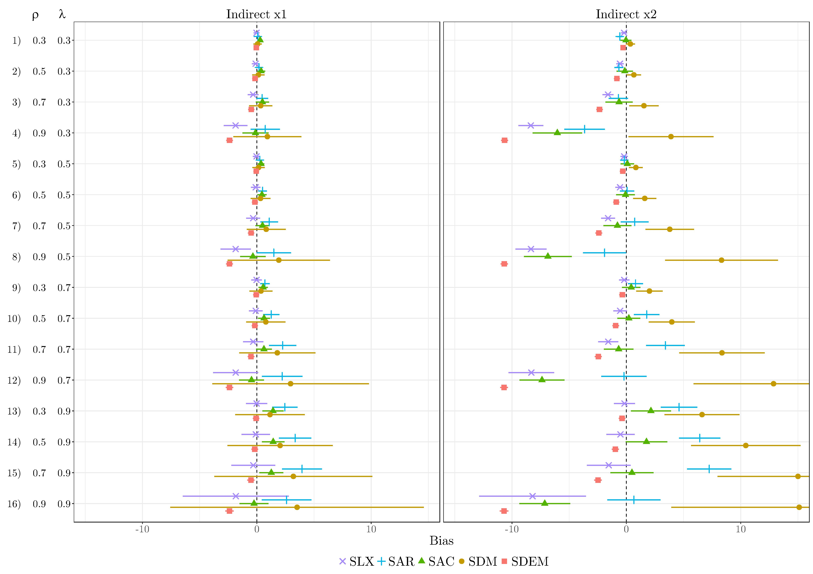

pkgs <- c("sf", "mapview", "spdep", "spatialreg", "tmap", "viridisLite") # note: load spdep first, then spatialreg
lapply(pkgs, require, character.only = TRUE)9 Comparing and Selecting Models
Required packages
Session info
sessionInfo()R version 4.3.1 (2023-06-16 ucrt)
Platform: x86_64-w64-mingw32/x64 (64-bit)
Running under: Windows 10 x64 (build 19044)
Matrix products: default
locale:
[1] LC_COLLATE=English_United Kingdom.utf8
[2] LC_CTYPE=English_United Kingdom.utf8
[3] LC_MONETARY=English_United Kingdom.utf8
[4] LC_NUMERIC=C
[5] LC_TIME=English_United Kingdom.utf8
time zone: Europe/London
tzcode source: internal
attached base packages:
[1] stats graphics grDevices utils datasets methods
[7] base
other attached packages:
[1] viridisLite_0.4.2 tmap_3.3-3 spatialreg_1.2-9
[4] Matrix_1.5-4.1 spdep_1.2-8 spData_2.2.2
[7] mapview_2.11.0 sf_1.0-13
loaded via a namespace (and not attached):
[1] xfun_0.39 raster_3.6-20 htmlwidgets_1.6.2
[4] lattice_0.21-8 vctrs_0.6.3 tools_4.3.1
[7] crosstalk_1.2.0 LearnBayes_2.15.1 generics_0.1.3
[10] parallel_4.3.1 sandwich_3.0-2 stats4_4.3.1
[13] tibble_3.2.1 proxy_0.4-27 fansi_1.0.4
[16] pkgconfig_2.0.3 KernSmooth_2.23-21 satellite_1.0.4
[19] RColorBrewer_1.1-3 leaflet_2.1.2 webshot_0.5.4
[22] lifecycle_1.0.3 compiler_4.3.1 deldir_1.0-9
[25] munsell_0.5.0 terra_1.7-29 leafsync_0.1.0
[28] codetools_0.2-19 stars_0.6-1 htmltools_0.5.5
[31] class_7.3-22 pillar_1.9.0 MASS_7.3-60
[34] classInt_0.4-9 lwgeom_0.2-13 wk_0.7.3
[37] abind_1.4-5 boot_1.3-28.1 multcomp_1.4-24
[40] nlme_3.1-162 tidyselect_1.2.0 digest_0.6.31
[43] mvtnorm_1.2-2 dplyr_1.1.2 splines_4.3.1
[46] fastmap_1.1.1 grid_4.3.1 colorspace_2.1-0
[49] expm_0.999-7 cli_3.6.1 magrittr_2.0.3
[52] base64enc_0.1-3 dichromat_2.0-0.1 XML_3.99-0.14
[55] survival_3.5-5 utf8_1.2.3 TH.data_1.1-2
[58] leafem_0.2.0 e1071_1.7-13 scales_1.2.1
[61] sp_1.6-1 rmarkdown_2.22 zoo_1.8-12
[64] png_0.1-8 coda_0.19-4 evaluate_0.21
[67] knitr_1.43 tmaptools_3.1-1 s2_1.1.4
[70] rlang_1.1.1 Rcpp_1.0.10 glue_1.6.2
[73] DBI_1.1.3 rstudioapi_0.14 jsonlite_1.8.5
[76] R6_2.5.1 units_0.8-2 Reload data from pervious session
load("_data/msoa2_spatial.RData")As we have seen, a variety of spatial model specifications exist that can be used to account for the spatial structure of the data. Thus, selecting the correct model specification remains a crucial task in applied research.
One way of selecting the model specification is the application of empirical specification tests. In general, there are two different strategies: a specific-to-general or a general-to-specific approach (Florax, Folmer, and Rey 2003; Mur and Angulo 2009).
9.1 Specific-to-general
The specific-to-general approach is more common in spatial econometrics. This approach starts with the most basic non-spatial model and tests for possible misspecifications due to omitted autocorrelation in the error term or the dependent variable.
Anselin et al. (1996) proposed to use Lagrange multiplier (LM) tests for the hypotheses \(H_0\): \(\lambda=0\) and \(H_0\): \(\rho=0\), which are robust against the alternative source of spatial dependence.
9.1.1 Lagrange Multiplier Test
We have earlier talked about methods to detect auto-correlation – visualisation and Moran’s I. Both methodscan tell us that there is spatial autocorrelation. However, both method do not provide any information on why there is autocorrelation. Possible reasons:
- Interdependence (\(\rho\))
- Clustering on unobservables (\(\lambda\))
- Spillovers in covariates (\(\boldsymbol{\mathbf{\theta}}\))
Lagrange Multiplier test (Anselin et al. 1996):
(Robust) test for spatial lag dependence \(LM_\rho^*\)
(Robust) test for spatial error dependence \(LM_\lambda^*\)
Robust test for lag dependence: \(H_0\): \(\rho=0\) \[ LM_\rho^* = G^{-1} \hat{\sigma}_\epsilon^2 \big(\frac{ \hat{\boldsymbol{\mathbf{\epsilon}}}^\intercal \boldsymbol{\mathbf{Wy}}}{\hat{\sigma}_\epsilon^2} - \frac{\hat{\boldsymbol{\mathbf{\epsilon}}}^\intercal \boldsymbol{\mathbf{W\hat{\epsilon}}}}{\hat{\sigma}_\epsilon^2} \big)^2 \sim \chi^2 \]
Robust test for error dependence: \(H_0\): \(\lambda=0\)
\[ LM_\lambda^* = \frac{ \big( \hat{\boldsymbol{\mathbf{\epsilon}}}^\intercal \boldsymbol{\mathbf{W\hat{\epsilon}}} / \hat{\sigma}_\epsilon^2 - [T\hat{\sigma}_\epsilon^2(G + T\hat{\sigma}_\epsilon^2)^{-1}] \hat{\boldsymbol{\mathbf{\epsilon}}}^\intercal \boldsymbol{\mathbf{Wy}} / \hat{\sigma}_\epsilon^2 \big)^2 }{ T[1 - \frac{\hat{\sigma}_\epsilon^2}{G + \hat{\sigma}_\epsilon^2}] } \sim \chi^2 \] with \[ \begin{split} G &= (\boldsymbol{\mathbf{WX\hat{\beta}}})^\intercal (\boldsymbol{\mathbf{I}} - \boldsymbol{\mathbf{X}} (\boldsymbol{\mathbf{X}}^\intercal\boldsymbol{\mathbf{X}})^{-1} \boldsymbol{\mathbf{X}}^\intercal) (\boldsymbol{\mathbf{WX\hat{\beta}}}) \\ T &= \mathrm{tr}[(\boldsymbol{\mathbf{W}}^\intercal + \boldsymbol{\mathbf{W}})\boldsymbol{\mathbf{W}}], \end{split} \] where \(\mathrm{tr}(\boldsymbol{\mathbf{A}})\) is the sum of the main diagonal of any square matrix \(\boldsymbol{\mathbf{A}}\).
9.1.2 Problem
The specific-to-general approach based on the robust LM test offers a good performance in distinguishing between SAR, SEM, and non-spatial OLS (Florax, Folmer, and Rey 2003).
Still, in their original paper, Anselin et al. (1996) already note the declining power of the robust LM\(_\lambda\) test for spatial error dependence with increasing autocorrelation in the dependent variable (indicating some uncertainty under a SAC-like DGP).
Mur and Angulo (2009) demonstrate strong drawbacks of the specific-to-general approach under non-optimal conditions like heteroscedasticity or endogeneity.
Moreover, the test disregard the presence of spatial dependence from local spillover effects (\(\theta\) is assumed to be zero), as resulting from an SLX-like process. Cook, Hays, and Franzese (2020), for instance, show theoretically that an SLX-like dependence structure leads to the rejection of both hypotheses \(H_0\): \(\lambda=0\) and \(H_0\): \(\rho=0\), though no autocorrelation is present (Elhorst and Halleck Vega 2017; Rüttenauer 2022).
9.2 General-to-specific approach
The general-to-specific approach depicts the opposite method of specification search. This approach starts with the most general model and stepwise imposes restrictions on the parameters of this general model.

In theory, we would
start with a GNS specification and
subsequently restrict the model to simplified specifications based on the significance of parameters in the GNS.
The problem with this strategy is that the GNS is only weakly identified and, thus, is of little help in selecting the correct restrictions .
The most intuitive alternative would be to start with one of the two-source models SDM, SDEM, or SAC. This, however, bears the risk of imposing the wrong restriction in the first place (Cook, Hays, and Franzese 2020). Furthermore, Cook, Hays, and Franzese (2020) show that more complicated restrictions are necessary to derive all single-source models from SDEM or SAC specifications.
9.3 General advice?
LeSage and Pace (2009), LeSage (2014), Elhorst (2014) argue that there are strong analytical reasons to restrict the model specifications to a subset, as the SDM subsumes the SLX and SAR model, and the SDEM subsumes SLX and SEM.
It is easily observed that SDM reduces to SLX if \(\rho=0\) and to SAR if \({\boldsymbol{\mathbf{\theta}}}=0\), while the SDEM reduces to SLX if \(\lambda=0\) and to SEM if \({\boldsymbol{\mathbf{\theta}}}=0\). Less intuitively, (Anselin 1988) has also shown that the SDM subsumes the SEM. Therefore, we can express the reduced form and rearrange terms:
\[ \begin{split} {\boldsymbol{\mathbf{y}}}&= {\boldsymbol{\mathbf{X}}}{\boldsymbol{\mathbf{\beta}}} + ({\boldsymbol{\mathbf{I}}_N}-\lambda {\boldsymbol{\mathbf{W}}})^{-1}{\boldsymbol{\mathbf{\varepsilon}}} \\ ({\boldsymbol{\mathbf{I}}_N}-\lambda {\boldsymbol{\mathbf{W}}}){\boldsymbol{\mathbf{y}}}&= ({\boldsymbol{\mathbf{I}}_N}-\lambda {\boldsymbol{\mathbf{W}}}){\boldsymbol{\mathbf{X}}}{\boldsymbol{\mathbf{\beta}}} + {\boldsymbol{\mathbf{\varepsilon}}} \\ ({\boldsymbol{\mathbf{I}}_N}-\lambda {\boldsymbol{\mathbf{W}}}){\boldsymbol{\mathbf{y}}}&={\boldsymbol{\mathbf{X}}}{\boldsymbol{\mathbf{\beta}}} -\lambda{\boldsymbol{\mathbf{W}}}{\boldsymbol{\mathbf{X}}}{\boldsymbol{\mathbf{\beta}}} + {\boldsymbol{\mathbf{\varepsilon}}} \\ {\boldsymbol{\mathbf{y}}}&=({\boldsymbol{\mathbf{I}}_N}-\lambda {\boldsymbol{\mathbf{W}}})^{-1}({\boldsymbol{\mathbf{X}}}{\boldsymbol{\mathbf{\beta}}} + {\boldsymbol{\mathbf{W}}}{\boldsymbol{\mathbf{X}}}{\boldsymbol{\mathbf{\theta}}} + {\boldsymbol{\mathbf{\varepsilon}}}). \end{split} \]
Thus, the SEM constitutes a special case of an SDM with the relative simple restriction \({\boldsymbol{\mathbf{\theta}}}=-\lambda{\boldsymbol{\mathbf{\beta}}}\), meaning direct and indirect effects are constrained to a common factor (Anselin 1988, 2003).
The fact that SDM subsumes SAR, SLX, and SEM leads to the conclusion that applied research should only consider SDM and SDEM as model specifications (LeSage 2014). Especially in the case of a likely omitted variable bias, (LeSage and Pace 2009, ~68) argue in favour of using the SDM.
Nonetheless, others propose to use the SLX specification as point of departure (Gibbons and Overman 2012; Halleck Vega and Elhorst 2015). First, scholars have argued that SAC and SDM models are only weakly identified in practice (Gibbons and Overman 2012; Pinkse and Slade 2010). Second, the global spillover specification in SAR, SAC, and SDM often seems to be theoretically implausible.
And finally:

9.4 Design and Theory
Some argue that the best way of choosing the appropriate model specification is to exclude one or more sources of spatial dependence – autocorrelation in the dependent variable, autocorrelation in the disturbances, or spatial spillover effects of the covariates – by design Gibbons, Overman, and Patacchini (2015).
Natural experiments are probably the best way of making one or more sources of spatial dependence unlikely, thereby restricting the model alternatives to a subset of all available models. However, the opportunities to use natural experiments are restricted in social sciences, making it a favourable but often impractical way of model selection.
Cook, Hays, and Franzese (2020) and Rüttenauer (2022) argue that theoretical considerations should guide the model selection.
Rule out some sources of spatial dependence by theory, and thus restrict the specifications to a subset ( Where does the spatial dependence come from? ),
Theoretical mechanisms may guide the choice of either global or local spillover effects.
9.5 Monte Carlo simulation
This section discusses results from Rüttenauer (2022). The aim: how do different spatial models perform under different scenarios?
The DGP of the Monte Carlo simulation follows a GNS, where \({\boldsymbol{\mathbf{\upsilon}}}_k\) and \({\boldsymbol{\mathbf{\varepsilon}}}\) are independent and randomly distributed \(\mathcal{N}(0,\sigma^{2}_\upsilon)\) and \(\mathcal{N}(0,\sigma^{2}_\varepsilon)\) with a mean of zero, and \({\boldsymbol{\mathbf{x}}}_k\) is the \(k\)th column-vector of \({\boldsymbol{\mathbf{X}}}\) for \(k=1,...,K\) covariates (\(K\) is fixed at \(2\) in the simulations). The parameter \(\rho\) represents the autocorrelation in the dependent variable, \(\lambda\) the autocorrelation in the disturbances, and \(\delta_k\) the autocorrelation in covariate \(k\).
\[ \begin{split} {\boldsymbol{\mathbf{y}}}&=\rho{\boldsymbol{\mathbf{W}}}{\boldsymbol{\mathbf{y}}}+{\boldsymbol{\mathbf{X}}}{\boldsymbol{\mathbf{\beta}}}+{\boldsymbol{\mathbf{W}}}{\boldsymbol{\mathbf{X}}}{\boldsymbol{\mathbf{\theta}}}+ {\boldsymbol{\mathbf{u}}},\\ {\boldsymbol{\mathbf{u}}}&=\lambda{\boldsymbol{\mathbf{W}}}{\boldsymbol{\mathbf{u}}}+{\boldsymbol{\mathbf{X}}}{\boldsymbol{\mathbf{\gamma}}}+{\boldsymbol{\mathbf{\varepsilon}}},\\ {\boldsymbol{\mathbf{x}}}_k&=\delta_k{\boldsymbol{\mathbf{W}}}{\boldsymbol{\mathbf{x}}}_k+{\boldsymbol{\mathbf{\upsilon}}}_k. \end{split} \] The parameter-vector \({\boldsymbol{\mathbf{\gamma}}}\) specifies the correlation between \({\boldsymbol{\mathbf{x}}}\) and the disturbance vector \({\boldsymbol{\mathbf{u}}}\), thereby defining the strength of an omitted variable bias. In reduced form, this DGP can be written as \[ \begin{split} {\boldsymbol{\mathbf{y}}}=&({\boldsymbol{\mathbf{I}}_N}-\rho {\boldsymbol{\mathbf{W}}})^{-1}\big[({\boldsymbol{\mathbf{I}}_N}-\delta_k {\boldsymbol{\mathbf{W}}})^{-1}{\boldsymbol{\mathbf{\upsilon}}_k}\beta_k \\ &+{\boldsymbol{\mathbf{W}}}({\boldsymbol{\mathbf{I}}_N}-\delta_k {\boldsymbol{\mathbf{W}}})^{-1}{\boldsymbol{\mathbf{\upsilon}}_k}\theta_k \\ &+({\boldsymbol{\mathbf{I}}_N}-\lambda {\boldsymbol{\mathbf{W}}})^{-1}(({\boldsymbol{\mathbf{I}}_N}-\delta_k {\boldsymbol{\mathbf{W}}})^{-1}{\boldsymbol{\mathbf{\upsilon}}_k}\gamma_k+{\boldsymbol{\mathbf{\varepsilon}}})\big]. \end{split} \]
The parameter vector \({\boldsymbol{\mathbf{\beta}}}\) was fixed at \({\boldsymbol{\mathbf{\beta}}}=% \begin{pmatrix}0.2&0.5\end{pmatrix} ^\intercal\), and the noise parameters were fixed at \(\sigma^{2}_\upsilon\), \(\sigma^{2}_\varepsilon=1\) for all trials. All other parameters vary between the following two options for each parameter (vector):
- \(\rho \in \left\{ 0, 0.5\right\}\),
- \(\lambda \in \{0, 0.5\}\),
- \({\boldsymbol{\mathbf{\delta}}} \in \left\{ % \begin{pmatrix}0&0\end{pmatrix} ^\intercal, % \begin{pmatrix}0.4&0.7\end{pmatrix} ^\intercal\right\}\),
- \({\boldsymbol{\mathbf{\theta}}} \in \left\{% \begin{pmatrix}0&0\end{pmatrix} ^\intercal, % \begin{pmatrix}0.1&0.8\end{pmatrix} ^\intercal\right\}\),
- \({\boldsymbol{\mathbf{\gamma}}} \in \left\{% \begin{pmatrix}0&0\end{pmatrix} ^\intercal, % \begin{pmatrix}0.3&0\end{pmatrix} ^\intercal\right\}\),
leading to a total of 32 distinct combinations. Note that this selection of parameters intentionally violates the common ratio assumption between direct and indirect effects, as this should be a more common case in practical research. All combinations were simulated in 1000 trials, with the same starting seed for each combination. If youre, interested in the simulations, see replication code on Github.
9.5.1 Without omitted variable bias

SLX, SDM, and SDEM all provide quite accurate estimates of the direct impacts (most visible in column 2). SAR, SEM, and SAC, in contrast, yield some drawbacks: especially in the presence of local spillover effects, these three specifications are biased (see lower part). Furthermore, SAR and SEM suffer from bias if autocorrelation in the disturbance and autocorrelation in the dependent variable are present simultaneously (see line 6 and 8). Though SLX is downwardly biased in case of autocorrelation in the dependent variable and the covariates (e.g. line 12 and 16), and SDM as well as SDEM yield some bias in case of a GNS-like process (line 14 and 16), those biases are rather moderate. This indicates that SLX, SDM, and SDEM are most robust against misspecification regarding the direct impacts.
Several differences exist regarding the indirect impacts. Most obviously, the often used SAR specification suffers from considerable bias: it overestimates indirect impacts in case of autocorrelation in the disturbances, and offers biased estimates if local spillover effects exist (which are not restricted to a common ratio). The latter also applies to SAC: though SAC offers relatively accurate estimates for \({\boldsymbol{\mathbf{x}}}_2\), it overestimates indirect impacts for \({\boldsymbol{\mathbf{x}}}_1\).
Regarding the remaining three specifications – SLX, SDM, and SDEM – conclusions are less obvious. SDM and SDEM suffer from large bias for high values of \({\boldsymbol{\mathbf{\theta}}}\) (see \(\boldsymbol{\mathbf{x}}_2\)) if the DGP follows a GNS-like process (line 14 and 16): SDM overestimates the indirect impacts, while SDEM underestimates the indirect impacts. In addition, SDM performs badly if the true DGP is SDEM (line 13), and SDEM performs badly if the true DGP is SDM (line 10), whereas the bias increases with higher values of \(\theta_k\) in both cases. Similar to SDEM, SLX underestimates the indirect impacts in presence of global spillovers / autocorrelation in the dependent variable.
9.5.2 With omitted variable bias

9.5.3 Indirect impacts if DGP = GNS
Below an illustration about the indirect impacts, if the spatial process is a combination of
Clustering on Unobservables
Interdependence (in the outcome)
Spillovers in Covariates

First, in a GNS-like situation, the bias in SDM grows with increasing autocorrelation in \({\boldsymbol{\mathbf{y}}}\) (\(\rho\)) and increasing autocorrelation in the disturbances (\(\lambda\)).
Second, the bias in SLX and SDEM increases with higher values of \(\rho\), but is unaffected from the strength of \(\lambda\).
Third, though SLX and SDEM suffer from the same problem, the bias from omitting global autocorrelation is less severe in SLX than in SDEM.
Thus, the SLX outperforms SDEM. Furthermore, SLX outperforms SDM in most situations; only if the autocorrelation in the dependent variable is much stronger than the autocorrelation in the disturbances (\(\rho=0.9\), \(\lambda=0.3\)), SDM yields lower bias than SLX. Note that the SAC yields relatively low biases for the indirect impacts in GNS-like processes, but at the same time produces relative large biases in the direct impacts.